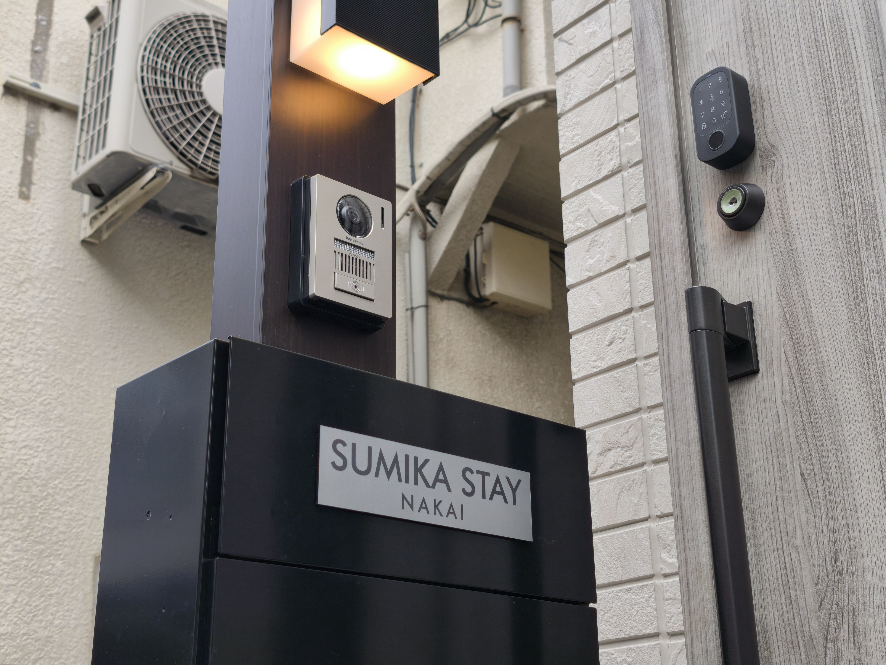

Address
3-30-9, Kami-Ochiai, Shinjuku-ku, Tokyo 〒161-0034
Nearest Stations
- Ochiai Station (Tokyo Metro Tozai Line / 東西線「落合駅」)
- Nakai Station (Toei Oedo Line / Seibu Shinjuku Line / 大江戸線・西武新宿線「中井駅」)
- Higashi-Nakano Station (JR Chuo-Sobu / Toei Oedo / 「東中野駅」)
Landmarks


- Mailbox / name plate: SUMIKA STAY NAKAI
- If you’re unsure, please open Google Maps above and confirm the building exterior photos.
From Narita & Haneda Airport
1
Airport Limousine Bus
Timetable
2
Arrive at Shinjuku Station / Busta Shinjuku
新宿駅 / バスタ新宿
Choose one of the following options for Step 3:
3
Toei Oedo Line to Nakai Station
- Step 4: Get off at Nakai & walk to the property.
- (Walking time depends on the exit you use—please follow Google Maps.)
3
Tokyo Metro Tozai Line to Ochiai Station
- Step 4: Walk from Ochiai to the property.
- (Use Google Maps for the best exit and shortest route.)
3
Taxi directly to our place
Show the driver this address: 〒161-0034 東京都新宿区上落合３丁目３０−９
All routes are IC-card friendly (Suica/PASMO). If you have large luggage, a taxi from Shinjuku is the simplest option.